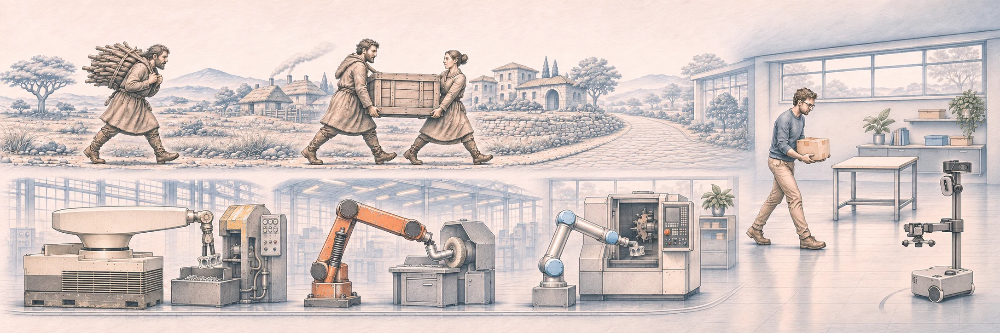
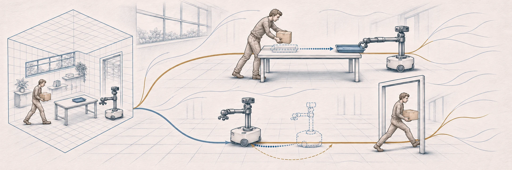
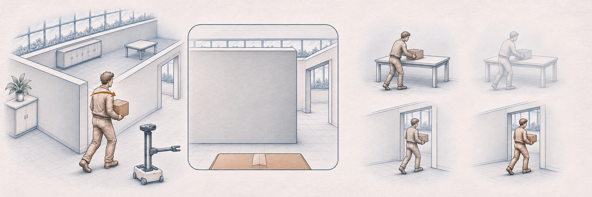
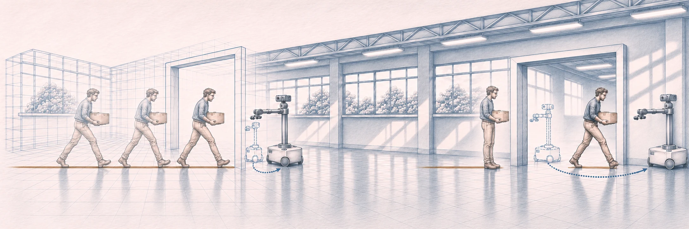
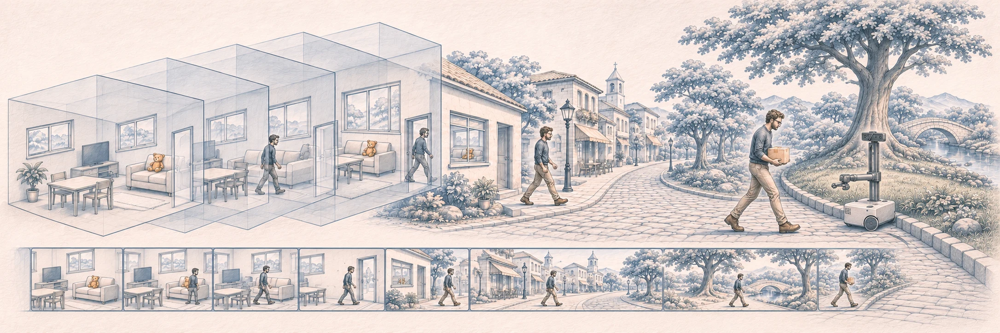

Research Essay Spatial Intelligence
Beyond Geometry: The Next Step for Physical AI
In 1961, Unimate entered a General Motors factory for the first time and handled castings according to a preset program.1 Since then, robots have taken on a growing range of tasks. In recent years, large models and multimodal representations have opened up new approaches to embodied AI, drawing on large-scale data and methods that generalize across settings. Robots can experience a wide range of physical conditions in simulation and learn general-purpose policies from data collected by different robots in a range of real-world settings. Some systems can already transfer learned skills to real hardware and even carry out complex navigation and manipulation tasks in unfamiliar settings.234 Simulation training, datasets spanning multiple robots, and policies that work in new environments seem to be bringing robotics closer to its own “GPT moment.”
Yet amid this wave of advances, one limitation often goes overlooked. Although robots are getting better at generalizing and executing tasks accurately, people typically still specify the task goals for them in advance. In other words, we are building more capable robots while still assuming they can wait for explicit instructions and carry them out without having to infer and respond to what people actually intend as the situation changes.
The real world doesn’t come with an instruction sheet. As we try to bring robots out of the laboratory and into human society, they struggle to adapt on their own to changing environments. Factory assembly lines are structured, and even autonomous driving has clear rules and a defined action space. In everyday settings, interactions are less structured, and instructions are often implicit.

A person’s goal is an invisible variable in the physical world, yet human intent is constantly reshaping that world.
01The Limits of Geometry and the Blind Spot of Spatial Intelligence
These conditions expose a gap in current Sim2Real approaches. Simulation engines can already reproduce aspects of physical behavior, although there is still considerable room for improvement. Social interactions driven by human intent remain much harder to capture.
Think of traditional spatial intelligence as a geometric cage. The metaphor captures an overly optimistic assumption: once the scene is reconstructed accurately enough, the right action will become clear. In other words, sufficiently good 3D representation or reconstruction should solve most of the problem. Yet in real environments where people are present, the same physical representation of a space can correspond to entirely different goals.

More importantly, when people are involved, a scene keeps evolving and its physical state can change at any moment. A robot that merely reacts to those changes keeps modeling a dynamic environment as a series of static snapshots. It then struggles to tell why the changes occurred or what might happen next. People and robots continually shape what the other faces next through their actions. Understanding space therefore has to go beyond describing static geometry and account for who is changing the environment, what goals those changes serve, and what consequences the robot’s own intervention will have.
02The Dimension of Intent
In cognitive science and developmental psychology, humans are understood to make sense of dynamic environments by drawing on teleological reasoning and theory of mind, rather than calculating pixel displacements frame by frame. In accounts of intuitive physics, people observe how objects move and infer the physical parameters and forces behind that motion.5 In open social settings, this kind of inference extends to inverse planning: we observe outward changes in the scene and infer the latent variable driving them, namely human intent.6 This inference often has no unique solution, since a single action can be consistent with a range of possible intentions.

Teleo-Spatial Intelligence (TSI) starts by connecting physical dynamics with the goals behind actions, then asks whether a system can infer what is happening from behavior and its spatial consequences.7 Physical dynamics determine how objects can move, while human intent determines how they will move. The ability we are after is to reason about observable actions, shifts in perspective, and possible human goals together, while accounting for physical constraints in open environments. When embodied AI fails to model this dimension, systematic difficulties can show up in the real world. One is perspective locking, or difficulty switching between egocentric and allocentric frames to understand a space. Another is assigning an action too rigidly to a single goal, making it difficult to connect physical facts with the person’s intent and decide how to collaborate.
03The Limits of Sim2Real
To help robots acquire a range of real-world behaviors at lower cost, embodied AI has long relied on Sim2Real. The idea is to run thousands of hours of high-fidelity physics simulation, trying to cover the complexity of reality in a virtual world where robots can learn to run, grasp objects, and avoid obstacles. Traditionally, differences in physical conditions were seen as the main challenge. The assumption was that sufficiently realistic simulation and sufficiently broad domain randomization would allow robots to bridge that gap.89
When we turn from simulation to real human environments, however, we encounter a blind spot in current Sim2Real approaches. These simulations model physical rules, while people’s actions and responses also shape what happens in real environments.
In conventional simulations, objects are often passive, stationary, or governed only by Newtonian mechanics. Even if we use motion capture to reconstruct and replay large numbers of real human trajectories, playback alone cannot recreate genuine interaction. It can only show how events unfold along one trajectory and cannot reveal what would have happened under a different course of action.10 Recent work on proactive assistance also identifies a limit of offline evaluation with static human models: it cannot capture how a robot’s actions change what a person does next.15

The difficult step for Sim2Real thus involves more than differences in data domains and physical conditions. It is the move from a closed physical sandbox into a social space shaped by human intent.
04Toward Interactive Decision-Making
As foundation models scale, they are getting better at explaining behavior in fluent, plausible terms. Whether they can put that understanding to use in the real world is a separate question.
Recent work on Spatial Supersensing has pushed spatial understanding to longer timescales by asking whether models can continuously track objects, spatial relations, and unfolding events in long videos.1112 This extends what models can perceive. Yet even after sustained observation, many tasks still come down to describing what happened in language through visual question answering (VQA). The model remains an observer, with no opportunity to intervene in the scene or receive real feedback from the physical world. That leaves a gap between what the evaluation measures and what a robot needs to do. After watching a complete video, a model can readily summarize what people did. A robot operating in the real world, by contrast, may face a situation full of unknowns in which a person has only just begun to move and their intent is unclear. At that point, different actions by the robot can lead to entirely different physical consequences.

This also forces us to reconsider current evaluations of spatial understanding and intent. An answer can seem flawless in hindsight, but did the model actually have enough evidence to make that judgment at the moment the action occurred? Did it infer intent from the cues available at that point, or did it simply “peek” at the outcome at the end of the video and use its language ability to construct a plausible explanation?13 Streaming benchmarks such as OVO-S-Bench and online models such as Stream3D-VLM take a step toward evaluating and reasoning from observations as they arrive.1617
There is still a large gap between inferring intent from passive video observation and using that inference to guide action in an uncertain, changing situation.
05Proactive Behavior Driven by Intent
From Unimate’s fixed workstation in 1961 to today’s general-purpose robots beginning to enter homes and public life, we have greatly expanded what machines can do in physical space. Whether Physical AI can become part of the human world depends not only on more precise motor control or more realistic 3D reconstruction, but also on how it handles the latent variables that never appear in the task instructions.
In real human–robot collaboration, people’s goals often do not arrive as complete, clear instructions. A goal may be only partly stated, conveyed by a subtle gesture, or change as the situation unfolds. A robot capable of working with people must do more than wait for instructions. It must also be able to act proactively based on their intent. It has to pick up cues and infer possible goals in changing situations with incomplete information, leave room to probe and adjust when the evidence is insufficient, and keep adjusting its next move as the interaction unfolds and check whether it is still helping.14 Recent systems explore two concrete forms of this feedback: inferring task intent from physical corrections and adapting assistance while a person and a robot carry an object together.1819
This is the central value of human intent for Physical AI. It bridges perception and execution, allowing a machine to understand why the environment is changing, work out how to intervene, and recognize what outcome would actually help the person.
As robots move out of the laboratory and into complex human environments, they will need to generalize their ability to complete predefined tasks and to both understand and respond proactively to changing human intent.
References
- The Henry Ford. Unimate Industrial Robot, 1961. Collection record.
- OpenAI et al. Learning Dexterous In-Hand Manipulation. 2018.
- Open X-Embodiment Collaboration. Open X-Embodiment: Robotic Learning Datasets and RT-X Models. ICRA 2024.
- Physical Intelligence et al. π₀.₅: A Vision-Language-Action Model with Open-World Generalization. 2025.
- Battaglia, Hamrick & Tenenbaum. Simulation as an engine of physical scene understanding. PNAS, 2013.
- Baker, Saxe & Tenenbaum. Action understanding as inverse planning. Cognition, 2009.
- Our work Gu et al. Vision-language models lag human performance on physical dynamics and intent reasoning. arXiv:2601.01547, Nature Communications.
- Tobin et al. Domain Randomization for Transferring Deep Neural Networks from Simulation to the Real World. IROS 2017.
- Peng et al. Sim-to-Real Transfer of Robotic Control with Dynamics Randomization. ICRA 2018.
- Nikolaidis et al. Human-Robot Mutual Adaptation in Shared Autonomy. HRI 2017.
- Yang et al. Cambrian-S: Towards Spatial Supersensing in Video. 2025.
- Our work Gu et al. Towards Spatial Supersensing in the Wild. ECCV 2026.
- Levine. Understanding the World Through Action. CoRL, PMLR 164.
- Ren et al. Robots That Ask for Help: Uncertainty Alignment for Large Language Model Planners. CoRL 2023.
- Patel & Chernova. Robots That Take Initiative: A Framework for Building and Evaluating Proactive Robots. arXiv preprint, 2026.
- Li et al.. OVO-S-Bench: A Hierarchical Benchmark for Streaming Spatial Intelligence in Multimodal LLMs. arXiv preprint, 2026.
- Yu et al.. Stream3D-VLM: Online 3D Spatial Understanding with Incremental Geometry Priors. arXiv preprint, 2026.
- Song et al.. TATIC: Task-Aware Temporal Learning for Human Intent Inference from Physical Corrections in Human-Robot Collaboration. arXiv preprint, 2026.
- Yang & Mavrogiannis. Learning from Humans for Proactive Assistance in Human-Robot Collaborative Transport. arXiv preprint, 2026.